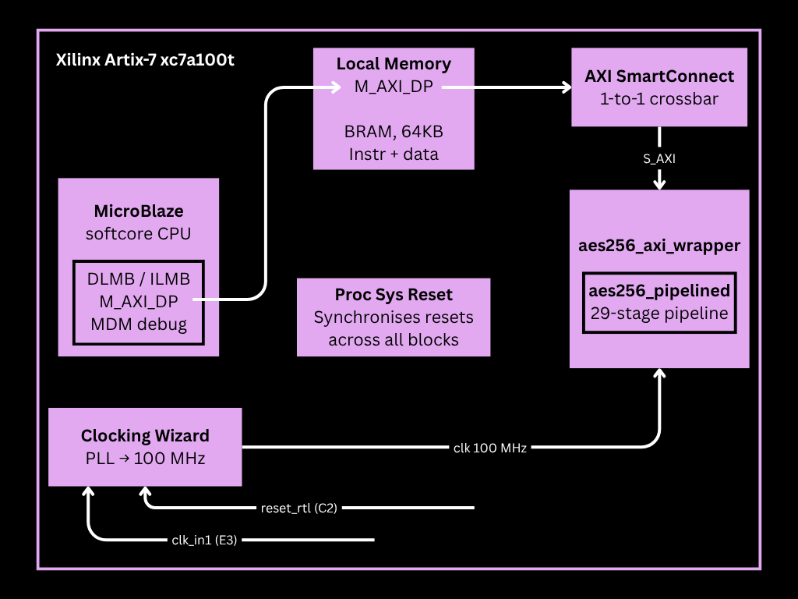
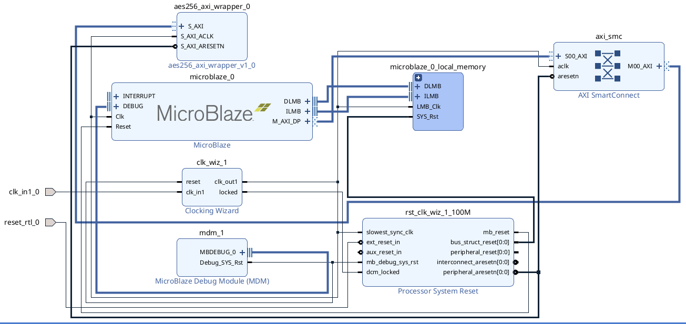
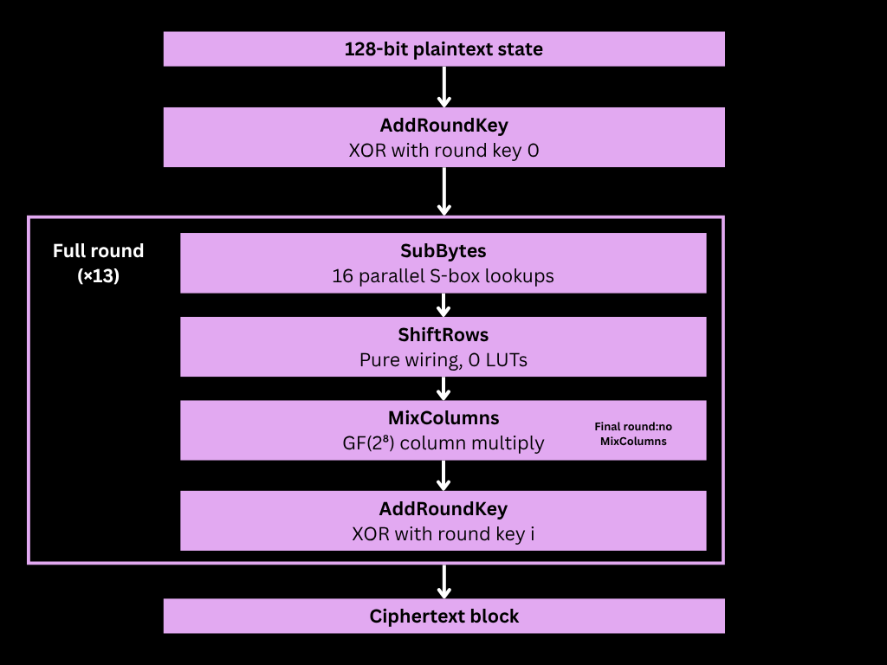
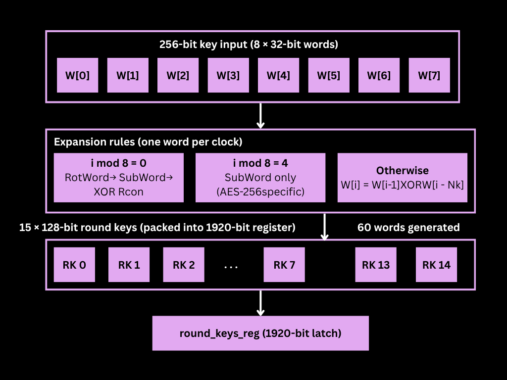
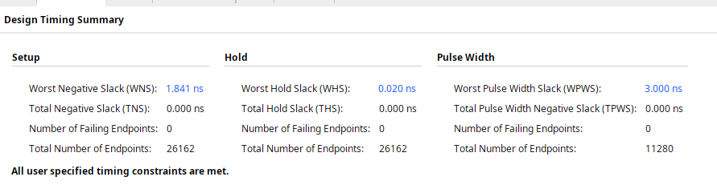
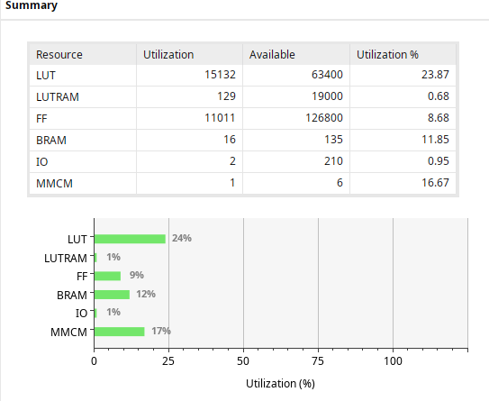
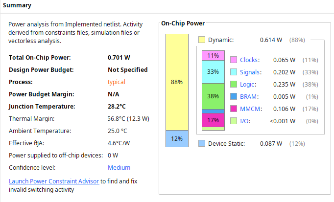
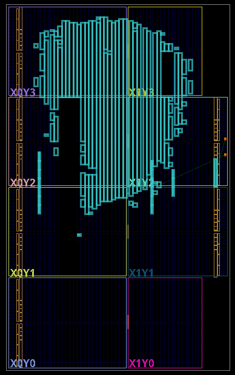
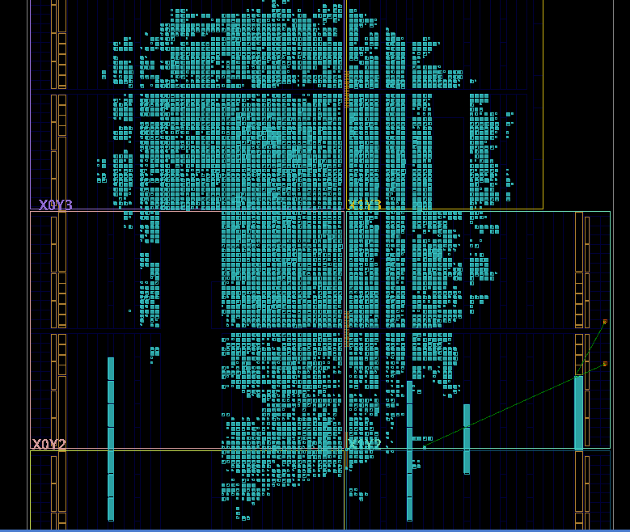

/aes256-soc
March 2026 | Verilog, FPGA, Cryptography, AXI4-Lite | 20 min read
We covered AES in class and I wanted to actually build it. Not simulate it in Python, not run it in software. Put it on an FPGA and make it talk to a CPU.
I'd been curious about AES for a while. Not the math in the abstract. I knew roughly how it worked. What I wanted was to understand what it actually looks like when you build it in hardware. How do you turn a cipher into something that lives on an FPGA and talks to a CPU? What breaks? What's harder than you expect?
Two to three weeks later I had answers. The surprising part was where the difficulty actually lived. Not in the crypto. In timing closure.
What I built
A complete AES-256 System-on-Chip on a Xilinx Artix-7 FPGA. The hardware is a fully pipelined encryption core. 29 pipeline stages, one new ciphertext block produced every clock cycle once the pipeline is full. The software side is a MicroBlaze softcore CPU connected to the accelerator over AXI4-Lite, with a C driver that treats the whole thing like a memory-mapped peripheral.
The CPU writes a 256-bit key, writes a 128-bit plaintext block, pulses a start bit, polls a status register, reads back 128-bit ciphertext. That's the entire interface. Everything complicated is buried in hardware.


How AES-256 works: the parts that matter for hardware
I'll keep the theory short. AES operates on a 4x4 matrix of bytes called the state, initialized from a 128-bit plaintext block. AES-256 uses a 256-bit key and runs 14 full rounds. Each round applies four operations.

SubBytes replaces every byte using a fixed 256-entry lookup table. It's the only non-linear step and provides confusion. In hardware you just instantiate 16 S-boxes in parallel, one per state byte.
ShiftRows cyclically rotates the rows of the state. Zero logic gates. It's literally just wires rearranged in the netlist. I kept double-checking this when I first implemented it because it seemed too easy.
MixColumns multiplies each column by a fixed matrix over GF(2⁸). This sounds intimidating but GF(2⁸) addition is XOR, and multiplication by 2 is a left-shift with a conditional XOR of 0x1B. No DSP blocks anywhere. A full column costs about 20 LUTs.
AddRoundKey XORs the state with the round key. 128 XOR gates. The cheapest operation in the whole cipher.
Key expansion generates 15 round keys from the 256-bit input. It runs sequentially,
one 32-bit word per clock cycle, and finishes in 52 cycles. The AES-256 schedule has
one quirk: at positions where i mod 8 == 4, you apply SubBytes to the
previous word without rotating or XORing a round constant. That's specific to the
256-bit variant and I missed it the first time.

Building the pipeline
The core idea: each AES round is a combinational function. Put a register after each round, chain 14 of them together, and you have a pipeline that produces one ciphertext per clock cycle after an initial latency.
The first problem I hit was that one full round is too much combinational logic for a single stage at 100 MHz. SubBytes alone is multiple LUT levels deep. Add ShiftRows, MixColumns, and a 128-bit XOR tree and you're way past 10 ns. Vivado was not quiet about this.
The fix was to split each round into two half-stages. SubBytes and ShiftRows in the first half, MixColumns and AddRoundKey in the second. ShiftRows is just wires so pairing it with SubBytes costs nothing. MixColumns and AddRoundKey are both fast XOR-based operations. Each half ends up around 3 to 5 logic levels.
module encryptRoundA(in, out);
wire [127:0] afterSubBytes;
subBytes s(in, afterSubBytes);
shiftRows r(afterSubBytes, out);
endmodule
module encryptRoundB(in, key, out);
wire [127:0] afterMixColumns;
mixColumns m(in, afterMixColumns);
addRoundKey b(afterMixColumns, out, key);
endmoduleThirteen full rounds, each split into two stages, plus the initial AddRoundKey and a three-stage final round (the last round drops MixColumns, so I split SubBytes, ShiftRows, and AddRoundKey into their own stages). 1 + 26 + 3 = 29 stages total.
A generate loop builds the whole pipeline, automatically slicing the
1920-bit round key register to feed each stage exactly the 128 bits it needs:
generate
for (i = 1; i <= 13; i = i + 1) begin : pipe
encryptRoundA rA (.in(stage[(i-1)*2]), .out(roundA_out[i]));
always @(posedge clk) stage[i*2-1] <= roundA_out[i];
encryptRoundB rB (
.in (stage[i*2-1]),
.key (round_keys_reg[(1919 - 128*i) -: 128]),
.out (roundB_out[i])
);
always @(posedge clk) stage[i*2] <= roundB_out[i];
end
endgenerate
A parallel valid-bit shift register travels alongside the data pipeline so consumers
never need to count cycles. When valid_out is high, ciphertext is ready.
When things broke
The first simulation run produced wrong ciphertexts. Consistently wrong. Same input always gave the same wrong output, which at least meant it was deterministic. I spent a while staring at the key expansion output before finding it: the round keys were being packed into the 1920-bit output register in the wrong order. Off by one in the indexing. Fixed that, re-ran simulation, got the first NIST vector right.
8ea2b7ca516745bfeafc49904b496089. I stared at it for a while.
Then I ran implementation and timing completely fell apart.
Vivado was reporting negative slack across dozens of paths. I opened the critical path report and the worst one traced from the AXI key registers, through the key expansion module, and into every AddRoundKey instance in the entire pipeline simultaneously. Because all 14 round key consumers were reading directly from the raw combinational output of key expansion, the tool found a single arc spanning 50-something logic levels. I hadn't thought about this at all when I connected things up.
I tried a few things that didn't help before I stumbled onto the actual fix. The key schedule output was touching everything at once. So I just registered it. One extra register, 1920 bits wide, latched when key expansion signals it's done. Every pipeline stage reads from the registered copy. Suddenly all those 50-level paths became: register to AddRoundKey to next register, 2 or 3 logic levels each.
reg [1919:0] round_keys_reg;
always @(posedge clk) begin
if (rst) round_keys_reg <= 0;
else if (key_ready) round_keys_reg <= round_keys_raw;
endThat cleared most of it. The remaining violation was the final round. I'd left SubBytes, ShiftRows, and AddRoundKey chained into a single stage because the final round is different from full rounds and I hadn't applied the same split. SubBytes is deep, and a 128-bit XOR tree on top of it pushed the path past 10 ns. Split it into three stages and it cleared.
One more thing: the path from the AXI key registers through key expansion to the registered copy was still technically violating timing. But that path only runs when you load a new key. Once at startup, never again during encryption. A multicycle path constraint tells the timing engine to evaluate it over 16 cycles instead of 1:
set_multicycle_path -setup 16 \
-from [get_cells -hierarchical -filter {NAME =~ *key_reg_reg*}] \
-to [get_cells -hierarchical -filter {NAME =~ *round_keys_reg_reg*}]
set_multicycle_path -hold 15 \
-from [get_cells -hierarchical -filter {NAME =~ *key_reg_reg*}] \
-to [get_cells -hierarchical -filter {NAME =~ *round_keys_reg_reg*}]I ran implementation again. Opened the timing summary. WNS +1.841 ns. Zero failing endpoints across 26,162 paths. I was unreasonably happy about a number being positive.
The AXI wrapper
The AXI4-Lite slave wrapper is what connects the accelerator to the CPU. It exposes everything as memory-mapped registers:
| Offset | Register | Description |
|---|---|---|
| 0x00 | CTRL | bit[0] = start encryption, bit[1] = load key |
| 0x04 | STATUS | bit[0] = done |
| 0x08 to 0x24 | KEY[0:7] | 256-bit key, word 0 = MSW |
| 0x28 to 0x34 | PT[0:3] | 128-bit plaintext |
| 0x38 to 0x44 | CT[0:3] | 128-bit ciphertext (read-only) |
AXI4-Lite write address and write data channels are independent. They can arrive in either order. The wrapper latches both separately and only executes the register write when both have arrived. Getting this wrong means dropped writes under certain CPU access patterns.
The CTRL register bits are pulse-only. They go high for exactly one cycle and
self-clear on the next. This one caught me. If core_valid_in stays high,
the pipeline accepts a second block immediately after the first, using whatever stale
data happens to still be in the plaintext registers. In simulation the testbench was
careful about timing so it looked fine. It would have been a nasty hardware bug.
The C driver ended up being six lines:
void aes_load_key(u32 *key) {
for (int i = 0; i < 8; i++)
Xil_Out32(AES_KEY0 + i*4, key[i]);
Xil_Out32(AES_CTRL, 0x2);
}
void aes_encrypt(u32 *pt, u32 *ct) {
for (int i = 0; i < 4; i++)
Xil_Out32(AES_PT0 + i*4, pt[i]);
Xil_Out32(AES_CTRL, 0x1);
while (!(Xil_In32(AES_STATUS) & 0x1));
for (int i = 0; i < 4; i++)
ct[i] = Xil_In32(AES_CT0 + i*4);
}Results





WNS +1.841 ns, zero failing endpoints. 15,132 LUTs (24%), 11,011 FFs (9%), 16 BRAMs (12%). Total on-chip power 0.701 W, junction temperature 28.2°C.
Testbench: 8/8 passed
NIST FIPS-197 vectors
- Key 000102...1f, PT 00112233...eeff →
8ea2b7ca516745bfeafc49904b496089✓ - All-zeros key, all-zeros PT →
dc95c078a2408989ad48a21492842087✓ - All-zeros key, all-ones PT →
acdace8078a32b1a182bfa4987ca1347✓ - All-ones key, all-zeros PT →
4bf85f1b5d54adbc307b0a048389adcb✓
Avalanche effect: 1-bit PT flip flipped 64/128 output bits ✓
Key change: different keys produce different ciphertext ✓
Reset behaviour: pipeline clears cleanly, no ghost output ✓
Back-to-back throughput: 4 consecutive blocks, all produced ✓
What I actually took away from this
Timing violations are not random noise. Every one has a cause and the cause is always a combinational path that's too long. What wasn't obvious to me before this project is that the path doesn't have to be inside one module. It can start in an AXI register file, pass through a key expansion block, and fan out to 14 pipeline stages simultaneously. Reading the critical path report properly. Not just the summary, the actual worst-path breakdown. That is the only way to find these.
The generate loop for the pipeline is one of the better things I've
written. Thirteen rounds, each split into two registered half-stages, each wired to
the right 128-bit slice of a 1920-bit register, all from about 15 lines of Verilog.
Parameterising it correctly meant I could have changed to AES-128 with a single
constant. I didn't need to, but knowing I could was the point.
The pulse-only control bit bug would have been invisible in simulation and ugly on hardware. Simulation testbenches are usually well-behaved about timing in ways that real CPUs aren't. Defensive RTL: self-clearing registers, explicit handshakes, not assuming anything about when signals arrive. It matters more than I appreciated before this.
The interesting work happened in the two weeks after I thought I was done.
Source code: github.com/cigi10/aes256-crypto-soc
Technical details:
- Target: Xilinx Artix-7 xc7a100t
- Tool: Vivado 2025.2
- CPU: MicroBlaze softcore (v11.0)
- Bus: AXI4-Lite
- Clock: 100 MHz
- Language: Verilog + C
- Pipeline depth: 29 stages
- Throughput: 1 block / cycle = 1.6 Gbps at 100 MHz
- WNS: +1.841 ns, all constraints met
- Standard: NIST FIPS-197 verified